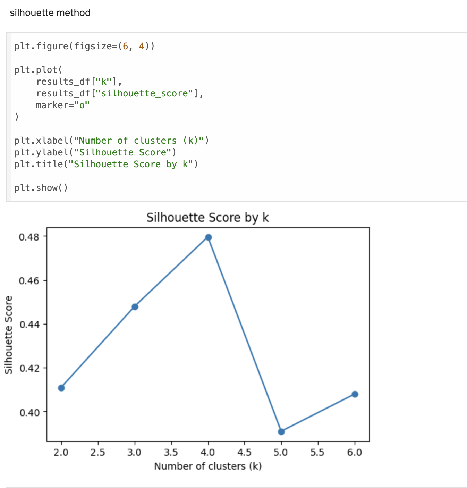
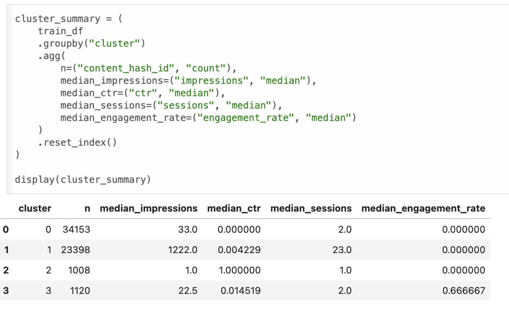
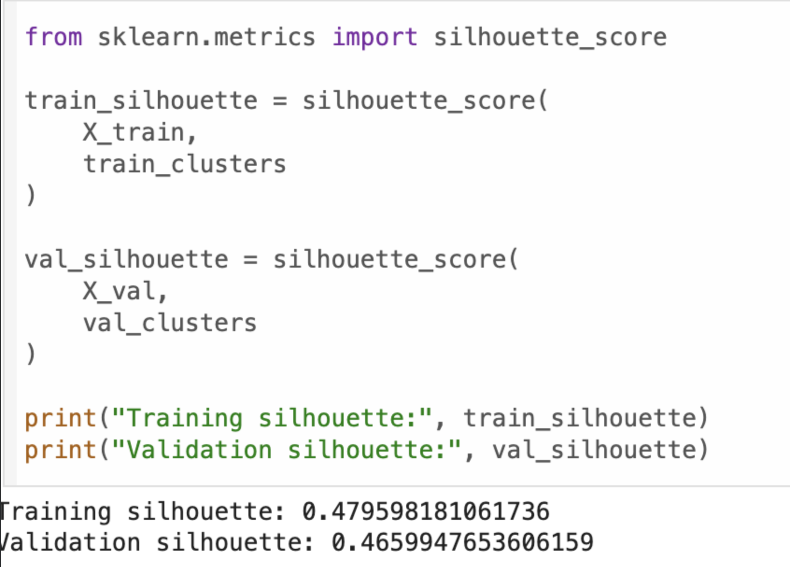
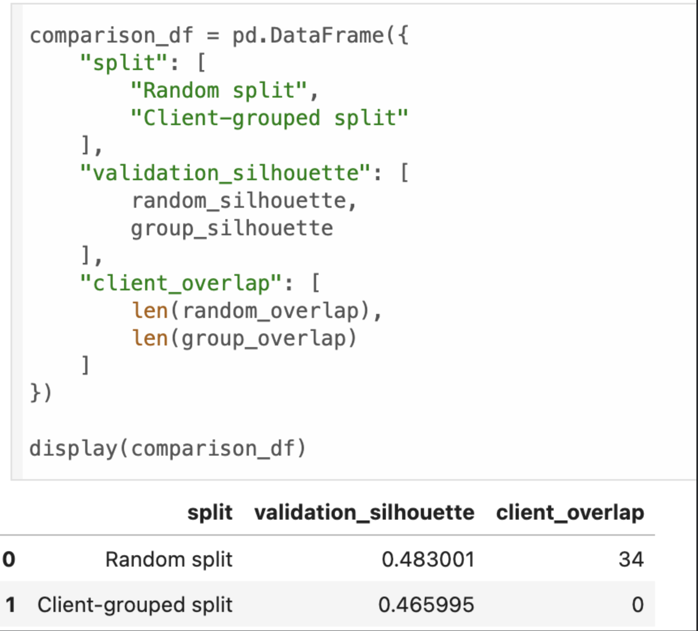
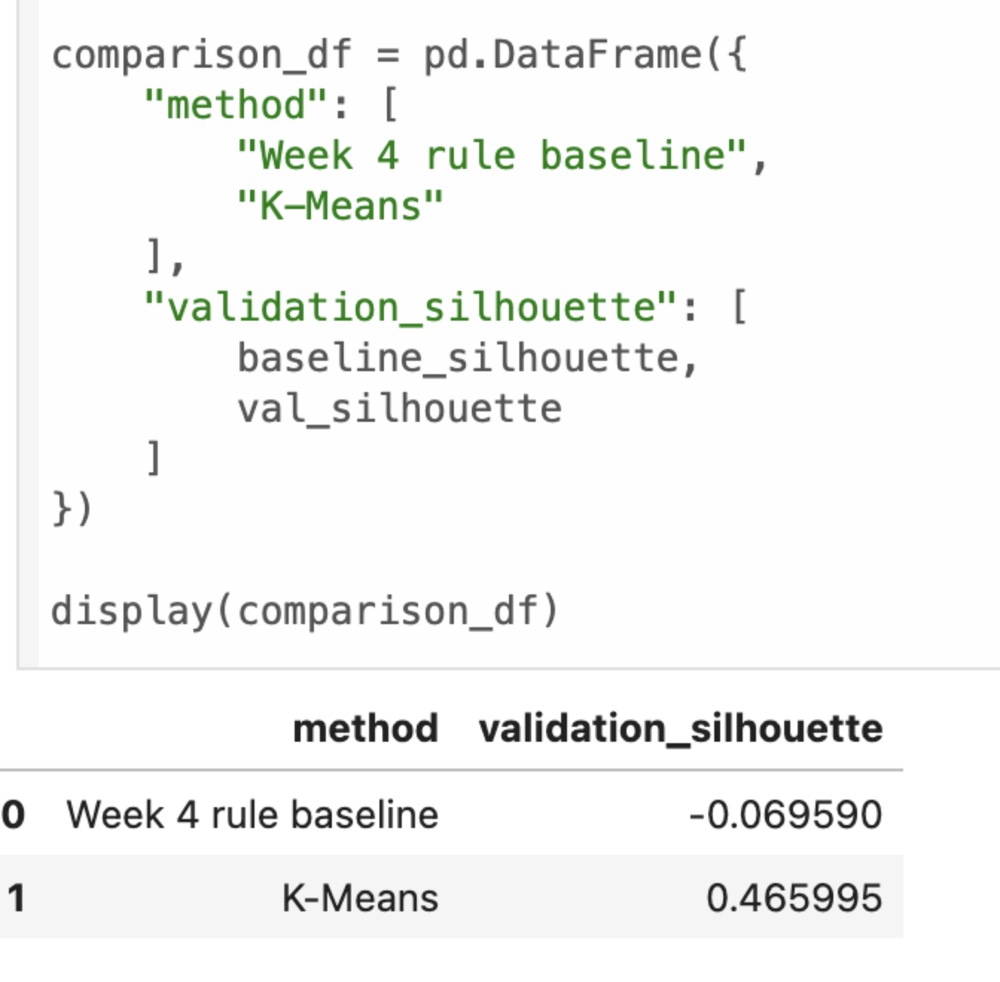
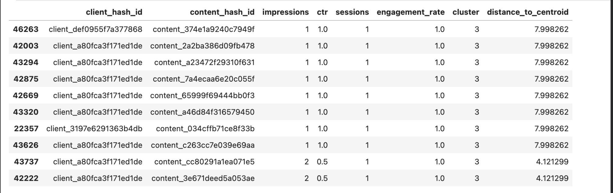

A data-driven approach to supporting content review prioritization using search visibility and engagement signals.
This study investigates whether unsupervised clustering can identify meaningful content-performance archetypes from search visibility and engagement signals. March 2026 content-performance data were aggregated into 63,856 content observations across 34 pseudonymized clients using impressions, CTR, sessions, and engagement rate. K-Means clustering was applied after log transformation and feature standardization, with cluster quality evaluated using the silhouette score and client-grouped validation. Four clusters were identified, achieving a validation silhouette score of approximately 0.466 on unseen clients and producing substantially more coherent geometric groups than baseline-derived priority bands. The resulting clusters are intended as descriptive decision-support patterns that help users identify which groups of content should be prioritized for human review.
The research question addressed in this study is whether unsupervised clustering can identify meaningful content-performance archetypes from search visibility and engagement signals, and whether those archetypes can support a useful content-review prioritization workflow compared with a manually defined rule-based baseline.
The study groups content using impressions, CTR, sessions, and engagement rate. The K-Means approach is compared with a rule-based baseline that ranks content using manually weighted visibility, low CTR, and low engagement signals. The objective is not to predict a target label, but to identify recurring performance patterns that can support human review decisions.
The analysis uses the FlyRank ML Internship warehouse and focuses on March 2026. Daily content-performance records were filtered to observations where both Google Search Console and Google Analytics data were available, then aggregated to one row per client and content item.
The final dataset contains 63,856 content observations across 34 pseudonymized clients. Search impressions and clicks were used alongside sessions and engaged sessions. CTR was calculated as clicks divided by impressions, while engagement rate was calculated as engaged sessions divided by sessions.
Rows without both GSC and GA4 availability were excluded rather than treating unavailable measurements as zero. Client and content identifiers were retained only for grouping, validation, and traceability. No client names, URLs, or private search queries are exposed in this paper.
The baseline was designed as a review-priority score rather than a measure of content quality. It combined three signals: visibility, low CTR, and low engagement.
Because lower CTR represented a stronger review signal, the percentile rank was inverted. This assigns higher scores to pages with relatively weaker CTR and lower scores to pages with stronger CTR.
The final baseline score was:
Visibility and low CTR each received a weight of 40%, while low engagement received 20%. This weighting reflected the earlier signal analysis, where visibility and CTR provided a stronger basis for identifying review opportunities, while engagement was retained as a supporting signal. A higher baseline score therefore represented a higher review priority.
The K-Means model used four page-level features: impressions, CTR, sessions, and engagement rate. CTR and engagement rate followed the same definitions used in the baseline.
Because impressions and sessions were strongly right-skewed, both were transformed using:
This transformation reduced the influence of extreme traffic values while preserving the relative ordering of observations. CTR and engagement rate were retained in their original rate form.
All four features were standardized using StandardScaler:
where μ represents the training-set mean and σ represents the training-set standard deviation.
The final clustering feature space was:
The scaler was fitted only on the training data and then applied to the validation data. Client and content identifiers were not used as model features.
K-Means begins by initializing a set of cluster centroids. Each observation is then assigned to the nearest centroid using Euclidean distance:
where x represents an observation, μj represents the centroid of cluster j, and the distance is calculated across all model features.
After observations are assigned to clusters, each centroid is recalculated using the mean of all observations belonging to that cluster:
The assignment and centroid update process is repeated until the cluster assignments stabilize or the centroids no longer change substantially.
Cluster quality was evaluated using the silhouette score:
Higher silhouette values indicate stronger cohesion within clusters and greater separation between clusters, while values near zero indicate greater overlap. The silhouette score was used to compare different cluster configurations and select the final number of clusters.

The silhouette analysis showed that four clusters produced the strongest cluster separation among the evaluated configurations, with a training silhouette score of approximately 0.480. Four clusters were therefore selected for the final K-Means model.

Cluster 0 contained the largest number of content items and was characterized by low visibility and weak response. Cluster 1 represented substantially higher visibility but relatively weak CTR and engagement. Cluster 2 consisted primarily of very low-volume content with extreme CTR values. Cluster 3 contained lower-volume content with comparatively stronger engagement.
These groups are interpreted as descriptive content-performance archetypes rather than fixed measures of content quality.

The final model achieved a training silhouette score of approximately 0.480 and a validation silhouette score of approximately 0.466. The relatively small decrease suggests that the identified cluster structure remained reasonably stable when applied to unseen clients.

The random split achieved a silhouette score of approximately 0.483, while the client-grouped split achieved approximately 0.466. However, the random split contained client overlap between training and validation, while the grouped split had zero client overlap. The grouped result was therefore treated as the more conservative estimate of performance on unseen clients.

The baseline-derived priority groups produced a silhouette score of approximately −0.070, while K-Means achieved approximately 0.466 on the validation data. This indicates that K-Means formed substantially more coherent groups in the feature space. However, the comparison should be interpreted cautiously because the baseline was originally designed for prioritization rather than clustering.

The most distant validation observations were primarily low-volume content with extreme rate values. Several observations contained only one impression or session while recording CTR or engagement rates close to 1.0. These results show that rate-based features can become unstable when calculated from very small denominators.
This study is limited to data from March 2026, so the identified clusters may not represent longer term or seasonal behavior. The model also uses only four features: impressions, CTR, sessions, and engagement rate, while other factors such as content type, topic, and search intent were not included.
Rate based features can also be unstable for very low volume content, as shown in the error analysis. In addition, the client grouped validation tests generalization to unseen clients but does not evaluate future time periods.
The clusters are descriptive rather than causal. Their purpose is to help users identify which groups of content should be prioritized for review based on their performance patterns, rather than to make automatic content decisions.
This cluster receives the highest review priority because the content already receives substantial visibility but produces relatively weak response. The recommended action is to review the content and search snippet.
These pages receive second priority and should be reviewed when they are strategically important to the business or content strategy.
These pages show comparatively strong engagement despite lower traffic volume. The recommended action is to protect and monitor their performance.
These pages receive the lowest immediate action priority because their performance rates are often based on very small amounts of data. Additional observations should be collected before making content decisions.
Within each cluster, content with higher impressions is ranked first because greater observed visibility represents greater potential review value.
The analysis, preprocessing steps, model development, validation audit, and recommendation workflow are available in the project repository.
Repository: github.com/nando135/flyrank_ml_1
The repository includes the capstone notebook and supporting notebooks used to reproduce the analysis.
This project was developed as part of the FlyRank ML Internship and is built on the FlyRank ML Internship dataset. The dataset and internship environment provided the production search and engagement signals used throughout this study.
Learn more about FlyRank.